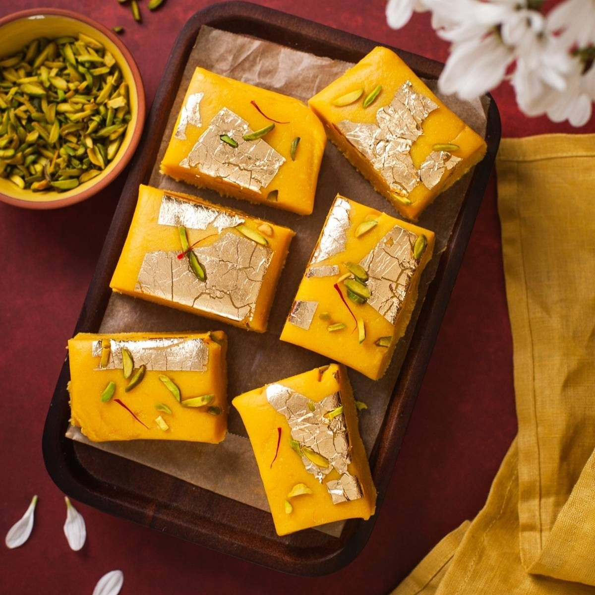

Gulab Jamun
Ingredients:For the Gulab Jamun
- 1 cup milk powder
- 1/4 cup all-purpose flour (maida)
- 1/4 teaspoon baking powder
- A pinch of baking soda
- 2 tablespoons ghee (clarified butter) or unsalted butter, melted
- 3-4 tablespoons milk (approximately)
- Oil or ghee for deep frying
Instructions:
- In a mixing bowl, combine the milk powder, all-purpose flour, baking powder, and baking soda. Mix well.
- Add the melted ghee or butter to the dry ingredients and mix it in using your fingers. The mixture should resemble breadcrumbs.
- Gradually add milk, a tablespoon at a time, and knead the mixture into a soft and smooth dough. Be careful not to over-knead it. The dough should be soft and pliable but not sticky.
- Cover the dough and let it rest for about 10-15 minutes.
- While the dough is resting, prepare the sugar syrup (Gulab). In a saucepan, combine sugar, water, crushed cardamom pods, and saffron (if using). Bring it to a boil and let it simmer for about 5-7 minutes until the syrup slightly thickens. Stir in the rose water or rose essence. Turn off the heat and set the syrup aside.
- After the resting time, divide the dough into small lemon-sized balls and roll them between your palms to make smooth, crack-free balls.
- Heat oil or ghee in a deep pan over medium heat. The oil/ghee should be moderately hot, not too high.
- Carefully slide the prepared Gulab Jamun balls into the hot oil/ghee, frying them in batches. Fry them until they turn golden brown, stirring gently for even cooking. The Gulab Jamun will expand slightly in size while frying.
- Once fried, remove the Gulab Jamun with a slotted spoon and drain excess oil/ghee by placing them on a paper towel.
- While the Gulab Jamun is still warm, place them in the prepared sugar syrup (Gulab). Allow them to soak in the syrup for at least 1-2 hours before serving. The Gulab Jamun will absorb the syrup and become soft and delectable.
- Gulab Jamun can be served warm or at room temperature. They taste great on their own or with a scoop of vanilla ice cream.

Berfi
Ingredients:For the Berfi
- 1 can (14 ounces) sweetened condensed milk
- 1 cup full-fat milk powder
- 1/2 cup unsalted butter or ghee (clarified butter)
- 1/4 cup chopped mixed nuts (almonds, cashews, pistachios) - optional
- 1/2 teaspoon cardamom powder
- A few saffron strands (optional)
- Edible silver leaf (varak) - optional, for garnish
Instructions:
- Prepare a square or rectangular pan by greasing it with a little ghee or lining it with parchment paper. Set it aside.
- In a heavy-bottomed pan, melt the butter or ghee over medium-low heat.
- Once the butter has melted, add the sweetened condensed milk to the pan and mix well.
- Stir in the milk powder gradually, stirring continuously to avoid lumps.
- Cook the mixture over medium-low heat, stirring constantly to prevent sticking or burning, until it thickens and starts to leave the sides of the pan. This should take about 8-10 minutes.
- Add the chopped nuts, cardamom powder, and saffron strands (if using). Mix well to incorporate all the ingredients evenly.
- Continue cooking the mixture for another 2-3 minutes until it thickens further and becomes a dough-like consistency.
- Pour the mixture into the prepared greased/lined pan, and spread it evenly using a spatula.
- If using, gently press the edible silver leaf (varak) on top for a decorative touch.
- Allow the Burfi to cool at room temperature for about 1-2 hours.
- Once the Burfi has cooled and set, cut it into square or diamond shapes using a sharp knife.
- Store the Burfi in an airtight container, and it will stay fresh for several days.
